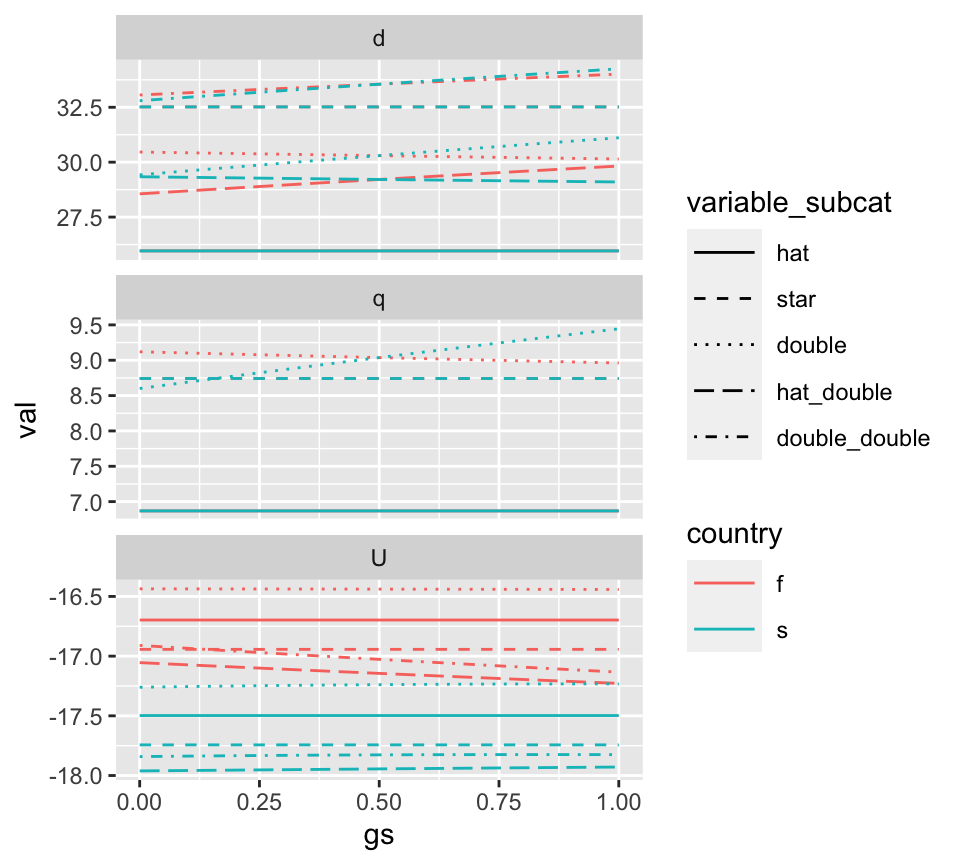

genevoisgame-vignette.RmdThis package is designed to allow simulation of a non-cooperative game theoretic model that evaluates whether or not two parties will agree to sign a treaty over a shared transboundary aquifer. The model incorporates geophysical, economic, and social features of the transboundary scenario to make this determination. These include aquifer connectivity and drawdown, the cost of abstracting groundwater and potential alternative sources, and trust between the players.
Note: The models implemented in this package are currently in review at Water Resources Research. The variable naming conventions in the paper differ slightly from the naming convention in the package. See the final section of this vignette for guide linking the two.
The game is based on the Genevois aquifer, shared by Switzerland and France, where an important and influential groundwater sharing treaty has existed since the 1970s. Thus, in the game, the two players are refered to S and F representing these two countries.
Utilities for Switzerland and France are given by: \[U_i(q_s,q_f)=-p_{0i}(Q_i-q_i)-\beta (d_{Bi}-h_i) q_i - c_{0rs} - c_{ri}r_M(\Omega)-\epsilon_i(\Omega)\pm z\] where \(q_i\) is the water abstracted by country \(i\), \(p_{0i}\) is the unit cost of water from some alternative water source, \(Q_i\) is the total water requirement, \(d_{Bi}-h_i\) is the groundwater depth (calculated as the depth to the bottom of the aquifer, \(d_{Bi}\), minus hydraulic thickness of the water table, \(h_i\)), \(\beta\) is the volumetric pumping cost per groundwater depth, \(c_{0rs}\) is a fixed cost for building the recharge facility, \(c_{ri}\) is the unit cost of recharge (because France doesn’t pay directly, \(c_{0rf}=c_{rf}=0\)), \(r_M(\Omega)\) is managed aquifer recharge and is high (low) if \(\Omega=1\) (\(\Omega=0\)), \(\epsilon_i\) accounts for uncertain costs of signing the treaty and is zero in the case of no treaty, and \(z\) is the price paid by France to Switzerland for French abstraction per the agreement. Because recharge is limited by physical properties of water supply and the aquifer, we assume that the construction of a recharge facility entails a fixed quantity of recharge, \(r_M\). The hydraulic thickness of the water table is the hydraulic head relative to the bottom of the aquifer. In confined aquifers, the hydraulic thickness is greater than the aquifer thickness and changes linearly with pumping. It is given by \[ h_i=h_{0i}-D_{ii} q_i-D_{ij} q_j+D_{ir}(\Omega) r_M(\Omega),\] where \(h_{0i}\) is the natural thickness of the water table accounting for steady-state recharge and discharge, and the remaining coefficients capture aquifer properties that relate groundwater depth with abstraction within country \(i\) (\(D_{ii}\)), abstraction by country \(j\) (\(D_{ij}\)), and managed recharge (\(D_{ir}\)).
For unconfined aquifers, abstraction is related linearly with discharge potential, \(\phi_i\), which is equivalent to the square of the thickness of the water table, which is given by \[h_i^2=\phi_i=h_{0i}^2-\Phi_{ii}q_i-\Phi_{ij}q_j+\Phi_{ir}(\Omega)r_M(\Omega),\] where the coefficients relate discharge potential with abstraction by country \(i\) (\(\Phi_{ii}\)), abstraction by country \(j\) (\(\Phi_{ij}\)), and managed recharge (\(\Phi_{ir}\)).
This vignette will show you the basic utilization of the package. If you haven’t installed the genevoisgame package, you can do so using devtools::install_github:
# Install the package devtools::install_github("https://github.com/gopalpenny/genevoisgame")
Next we will load the package along with some of the tidyverse packages for easy data wrangling.
library(genevoisgame) library(dplyr) #> Warning: package 'dplyr' was built under R version 3.6.2 library(tidyr) #> Warning: package 'tidyr' was built under R version 3.6.2 library(ggplot2)
We will use the built-in dataset example_params_confined as a basis for our analysis. Whenever a treaty game is simulated, parameters are validated using the check_params function, and a full list of required parameters can be found in the documentation for this function. The game determines whether to use a confined or unconfined scenario using the parameters input to the game. If Dxx are used, the game will apply to a confined aquifer. If PHIxx are used, the game will apply to an unconfined aquifer. See ?check_params for details.
The game is evaluated using evaluate_treaty for a single scenario, or can be evaluated for multiple scenarios using evaluate_treaty_cases. For confined aquifers, the game is analyzed using analytical equations.
In order to plot contour lines of the outcomes, we will use the function get_contours, which is part of the genevoisgame package.
# Generate parameter data.frame params_basic_trust_v_trust <- example_params_confined %>% select(-gf,-gs) params_df_trust_v_trust <- params_basic_trust_v_trust %>% crossing(gs=seq(0,1,by=.05), gf=seq(0,1,by=.05)) # Run the game theoretic model outcomes_trust_v_trust <- evaluate_treaty_cases(params_df_trust_v_trust,"pqud") # Get contours for the model cl_trust_v_trust <- get_contours(outcomes_trust_v_trust %>% rename(x=gs,y=gf,z=zRange), levels=c(-0.2,0,0.2)) # Plot the output ggplot() + geom_raster(data=outcomes_trust_v_trust,aes(gs,gf,fill=zRange)) + geom_path(data=cl_trust_v_trust,aes(x,y,group=line,linetype=level_factor)) + scale_fill_gradient2() + coord_equal() + theme(legend.box = "horizontal")
Note that the parameters "pqud" in the evaluate_treaty_cases function returns utility (u), depth (d), pumping (q), and the varying parameters (p). Checking the names of the output outcomes_trust_v_trust, we can see the these values are present for the potential scenarios first best (*hat), nash equilibrium (*star), cheating the other player (*double), victim of the cheat (*hat_double), and cheating by both players (*double_double). The nash equilibrium is the scenario without a treaty. The others involve the signing of a treaty and the combination of players being gentleman or cheats.
names(outcomes_trust_v_trust) #> [1] "treaty" "zRange" "zMinSwiss" #> [4] "zMaxFrench" "qshat" "qsstar" #> [7] "qsdouble" "qfhat" "qfstar" #> [10] "qfdouble" "Us_hat" "Us_star" #> [13] "Us_double" "Us_hat_double" "Us_double_double" #> [16] "Uf_hat" "Uf_star" "Uf_double" #> [19] "Uf_hat_double" "Uf_double_double" "ds_hat" #> [22] "ds_star" "ds_double" "ds_hat_double" #> [25] "ds_double_double" "df_hat" "df_star" #> [28] "df_double" "df_hat_double" "df_double_double" #> [31] "gs" "gf"
Sometimes it may be valuable to plot the depth, utility, and pumping output along some axis. There is a helper function, gather_outcomes which can help with this. It gathers the output variables in long format so that it can be plotted against another variable. In this case, we are interested in seeing how the outcomes vary over gs, holding gf constant at 0.5.
outcomes_trust_long <- outcomes_trust_v_trust %>% filter(gf==0.5) %>% gather_outcomes()
Using facet_wrap from ggplot2 and careful selection of linetypes and colors, we can better see the effect of gs on the outcome variables under scenarios of a treaty (“hat”), nash equlibrium (“star”), cheat (“double”), and victim (“hat_double”).
ggplot(outcomes_trust_long) + geom_line(aes(x=gs,y=val,color=country,linetype=variable_subcat)) + facet_wrap(~variable_cat,scales="free_y",ncol=1) + scale_linetype_manual(values=c("solid","dashed","dotted","longdash","dotdash")) + theme(legend.key.width = unit(1,"cm"))

We will now do the same analysis, but using example_params_unconfined, meaning that the game will operate on an unconfined aquifer.
For unconfined aquifers, the underlying game equations are nonlinear and the results are calculated numerically using the multiroot function from the rootSolve package. For this reason, game simulation takes longer for unconfined aquifers. Also note that the results for zRange are rounded to the 6th decimal place to avoid numerical errors in determination of the treaty.
params_basic_trust_v_trust_un <- example_params_unconfined %>% select(-gf,-gs) params_df_trust_v_trust_un <- params_basic_trust_v_trust_un %>% crossing(gs=seq(0,1,by=.2), gf=seq(0,1,by=.2)) # Run the game theoretic model outcomes_trust_v_trust_un <- evaluate_treaty_cases(params_df_trust_v_trust_un) # Get contours for the model cl_trust_v_trust_un <- get_contours(outcomes_trust_v_trust_un %>% rename(x=gs,y=gf,z=zRange), levels=c(-0.1,-0.05,0,0.05,0.1)) # Plot the output ggplot() + geom_raster(data=outcomes_trust_v_trust_un,aes(gs,gf,fill=zRange)) + geom_path(data=cl_trust_v_trust_un,aes(x,y,group=line,linetype=level_factor)) + scale_fill_gradient2() + coord_equal() + theme(legend.box = "horizontal")
Some variables in the package follow a different naming convention than variables used in the manuscript (and SI) that derive the game that is modeled by the genevoisgame package. For instance, trust in the manuscript is \(\lambda_1\) and \(\lambda_2\), whereas trust in the package is gs and gf, respectively. Players 1 and 2 in the manuscript corresponds to Switzerland and France, respectively, in the package. Furthermore, Honest, Nash, and Fraud scenarios of abstraction correspond to hat, star, and double variables in the package. For instance:
qshat
qsstar
qsdouble
Furthermore, in the package the following variables correspond to specific types of utility:
Us_hat: \(U_s(q_s^H,q_f^H)\) // Uf_hat: \(U_f(q_s^H,q_f^H)\)
Us_star: \(U_s(q_s^N,q_f^N)\) // Uf_star: \(U_f(q_s^N,q_f^N)\)
Us_double: \(U_s(q_s^F,q_f^H)\) // Uf_double: \(U_f(q_s^H,q_f^F)\)
Us_hat_double: \(U_s(q_s^H,q_f^F)\) // Uf_hat_double: \(U_f(q_s^F,q_f^H)\)
Us_double_double: \(U_s(q_s^F,q_f^F)\) // Uf_double_double: \(U_f(q_s^F,q_f^F)\)
Note that the above conventions for utility are the same as for depth (i.e., ds_hat_double \(\Leftrightarrow d_s(q_s^H,q_f^F)\)).
The game is solved in terms of the side payments \(z\). The relationships between the manuscript and package naming are:
zMinSwiss
zMaxFrench
zRange <- zMinSwiss - zMaxFrench
A couple more input parameters should also be noted:
B in the packagees, ef in the packageLastly, the package allows differences between \(D_{ir}\) with a treaty (e.g., DsrT) and without a treaty (e.g., DsrN). The same goes for \(r_m\) (rmT and rmN).
The remaining variables use a naming convention that directly follows from the manuscript, keeping in mind that the subscripts are changed (\(1 \to s\) and \(2 \to f\)).